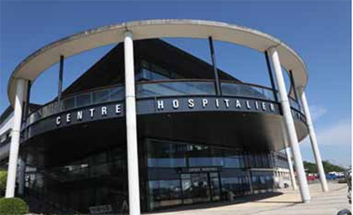

Dordogne
Le déconfinement se prépare
L’hôpital de Périgueux va reprendre les activités médicaleset chirurgicales qui avaient été différées. PHOTO ARCHIVES S. K. / « SUD OUEST »
Périgueux - S'il reste armé face au virus, l'établissement va peu à peu reprendre une activité normale
Le centre hospitalier de Périgueux, qui a fermé 200 lits pour répondre au mieux à l'épidémie de coronavirus, va progressivement reprendre une activité normale à partir du 11 mai. " Il ne s'agit pas de désarmer l'établissement face au Covid, a précisé son directeur Thierry Lefebvre. Nous allons reprendre les activités que nous avions différées, qu'elles soient médicales ou chirurgicales. " L'hôpital va de nouveau être organisé pour accueillir les patients de manière à ce qu'ils ne restent pas dans les salles d'attente et qu'ils ne croisent pas d'autres malades. L'ensemble des actes se fera, bien sûr, sur rendez-vous et concernera en priorité les personnes "à risque".
À compter du lundi 11 mai, le centre hospitalier pense être en capacité de réaliser 300 tests par jour. "Ils seront destinés à la filière hospitalière pour éviter que des patients soient en attente", précise le directeur.